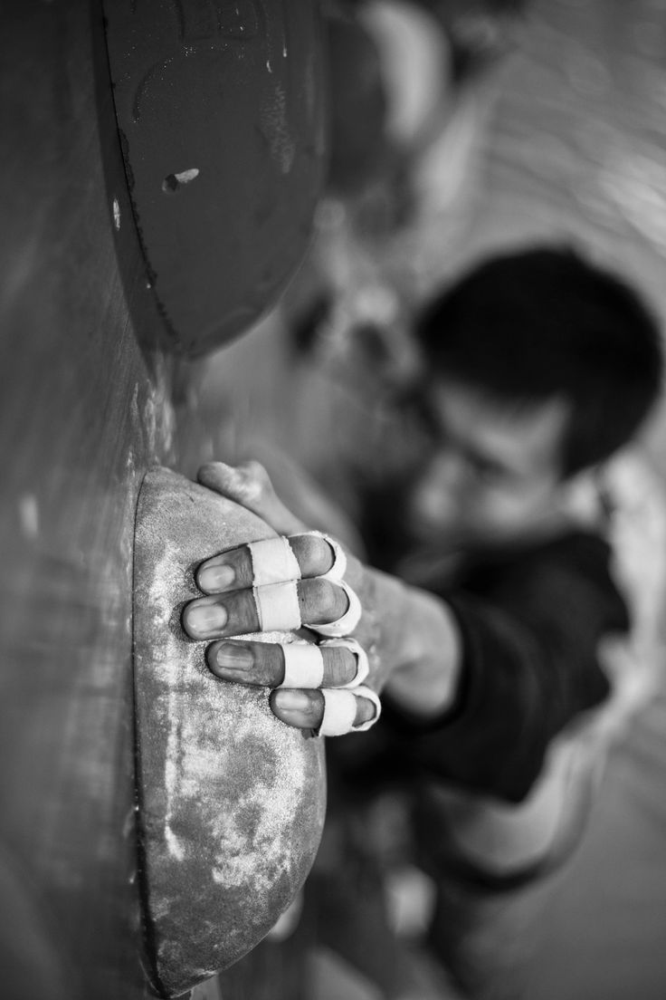

Notre intention
Rendre le bloc plus lisible, sans prétendre remplacer les conseils d’un encadrant ni les consignes d’une salle. La progression est personnelle : observez, échangez, recommencez et prenez du plaisir à bouger.
Les photos du site sont les éléments visuels fournis avec le projet initial.

Priorité sécurité
Les prérequis avant chaque séance
- Échauffez progressivement doigts, épaules, hanches et chevilles.
- Respectez les consignes spécifiques de la salle.
- Vérifiez que les tapis sont joints et libres d’obstacles.
- Ne passez pas sous un grimpeur et ne vous tenez pas dans sa zone de chute.
- Apprenez à descendre avant de tenter des blocs plus hauts.
- Arrêtez-vous en cas de douleur inhabituelle ou de fatigue importante.